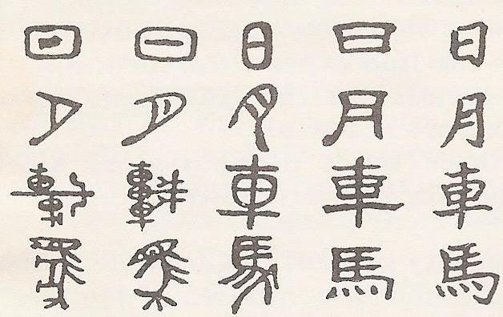
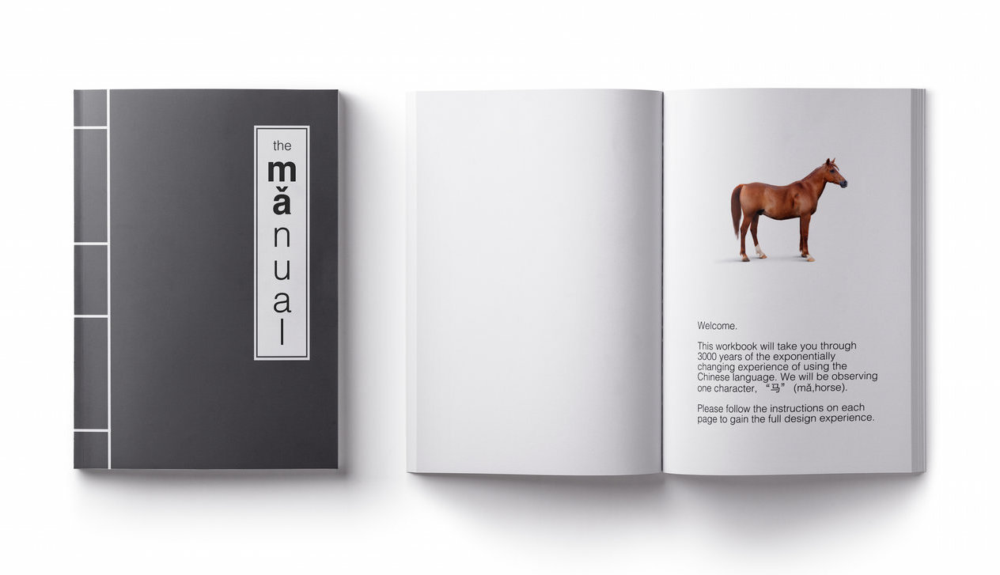
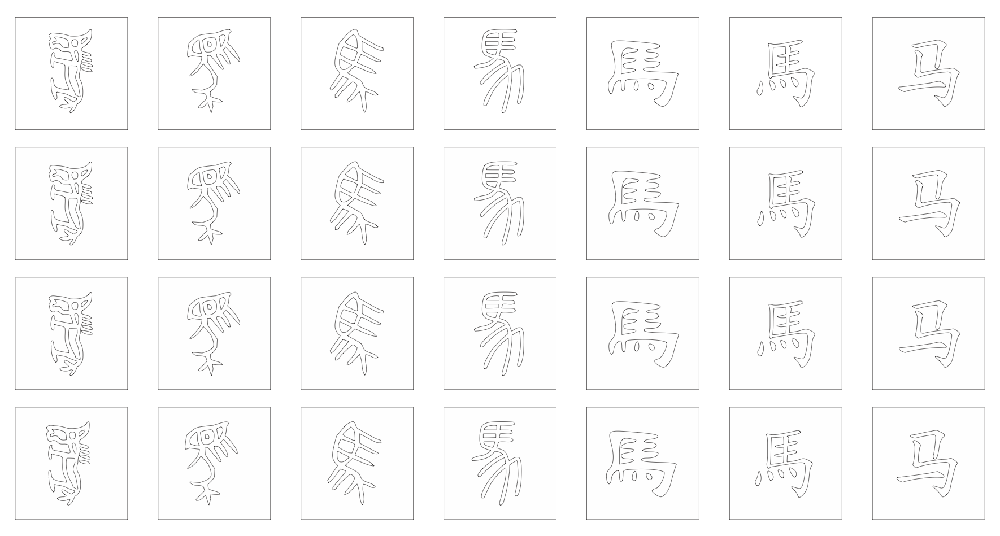

Goals
Explore the rich timeline of Chinese characters that spans across three powers of ten in years (oracle bone script to today's tech-assited usage of simplified characters)
Pose questions on how our language decisions reflect today’s issues of digitization and culture
Concreting a universal representation of the transformation of Chinese language
Design Process
American Abstract Artists
American Abstract Artists was founded in 1936 in New York City when abstract art was wounded up with a lot of criticality
Chinese Written LanguageEven though Chinese characters are relatively ubiquitous all around the world, very few people outside of the Chinese cultural tradition are aware of the organic, stunning, and well-documented transformation that the written language has undergone. By retracing steps that occurred over thousands of years, one can clearly see how the modern simplified script is directly descended from its pictographic beginnings — characters found carved on turtle bones from ancient times.
Abstracting the TransformationIn a way, the transformation we were hoping to document can be seen as an organic design process that was simply pushed by time. As people from different eras had different materials and demands, they gradually adapted tradition to their temporalities. It was important for us to leverage our particular technological moment and represent this with appropriate abstraction.
Narrowing Down the Transformation
Because the chinese language consists approximately 50,000 characters, we decided to focus on the evolution of a single character. The character "mǎ" (pinyin) or 马 (simplified) means horse. It also has evolved into 吗 which is one of the most common words used in Chinese language when you ask a question. Below you can see the reshaping of the character mǎ.
Designing the Interaction
We knew we wanted to provide an educational experience that directly interacted with users, since that’s the best way to make an idea stick. We created a manual that included instructions for users to simulate separate experiences of interaction with character mǎ at different points in time. For example, an early Oracle Bone script simulation would instruct users to actually try to carve into a piece of acrylic or stone.
{kind=link}
Feedback
However, we got feedback from our professors and graduate students of Architecture that our design was not doing the infinitely elegant and natural transformation of the Chinese language justice.
Our focus to make the experience educational turned out too didactic (i.e. instructions, book) and the act of simulating the various stages of the written character was too rigorous and complicated for the users.
The final product had to be simpler.
Improving the Interaction
We took another look at the actual characters and narrowed to 7 stages of transformation. We realized that when you simply lay them next to each other, the lineage is extremely self-explanatory and linear to tell their own story. We did not need a wordy and convoluted manual.
Final Idea: Mǎ Puzzle SetHowever, it was still not enough to just lay them out in 2D. We finally decided that a “puzzle set” would allow the user to internalize the shape, strokes, and overall structure of each character as they put the pieces together. The delicateness of the pieces were an intentional design decision, as it prompts the user to carefully separate the shapes out from each other and have an opportunity to look and distinguish the forms from one another.
Laser Cutting
We wanted to emphasize the role of technology in the exponential transformation of the Chinese characters. The old, poetic act of calligraphy to the automated process we encounter today undoubtedly creates a jarring contrast. Our decision to choose laser cutting as our method of design and paper as our medium combines the digital and analog experience.
ChallengeIt was our first time using a laser cutter (Epilog Laser), so we had to start by learning the basics at the MIT Fab Lab. We had to do numerous runs, because the paper kept on burning.
Advanced New Media Art Show
art show installation photos, spotify tracklist